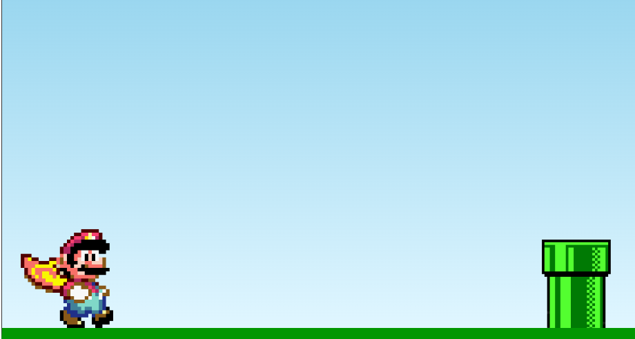
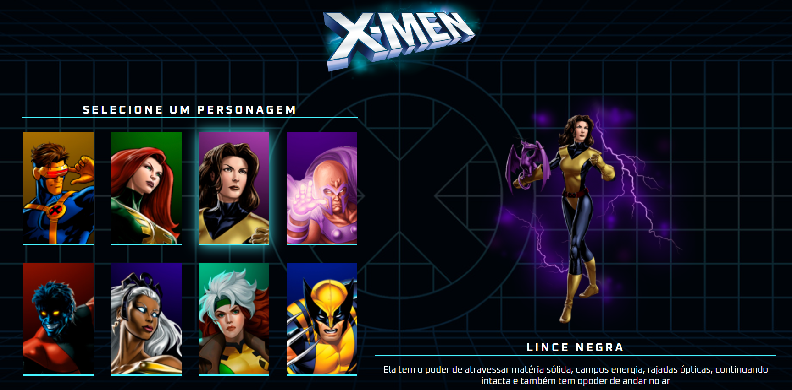
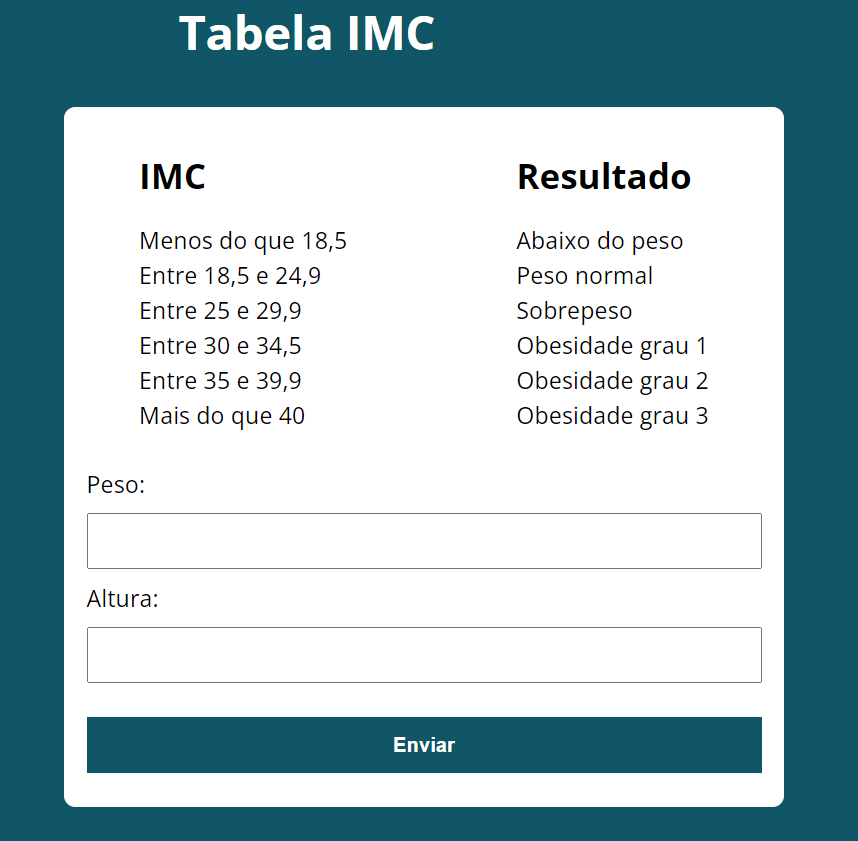
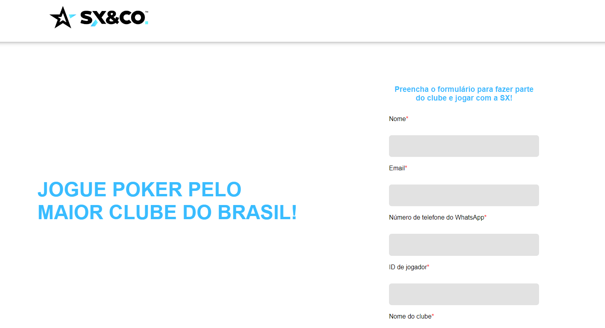

Mario Jump
Um jogo onde o objetivo é fazer com que o Mario pule sobre os obstáculos. Desenvolvido em HTML, CSS e JS
X-Men
Um projeto baseado em uma tela de seleção de personagens que traz alguns membros dos X-Men. Desenvolvido em HTML, CSS e JS
Alura Plus
Uma página inicial de assinatura de streaming da plataforma Alura, desenvolvido em conjunto com os professores do curso de HTML e CSS. Desenvolvido em HTML e CSS
Calculadora IMC
Um Uma calculadora que calcula o índice de massa corporal à partir dos dados fornecidos pelo usuário. Desenvolvido em HTML, CSS e JS
Clone Landing Page Grupo SX
Uma landing page que capta os dados fornecidos pelos clientes e os coloca em um banco de dados (local storage) para que possam ser utilizados em futuras promoções, contatos do time de marketing ou sorteio de brindes. Desenvolvido em HTML, CSS e JS
